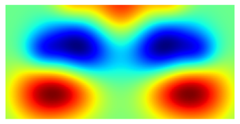

Modal decomposition of a swirling flow (Part 1)¶
Import modules¶
import pandas as pd
import numpy as np
import matplotlib.pyplot as plt
import tensorflow as tf
from tensorflow import keras
from tensorflow.keras.layers import Input, Dense, Conv2D, MaxPooling2D, UpSampling2D, Lambda, Add, Reshape
from tensorflow.keras.models import Model, load_model
from tensorflow.keras.callbacks import ModelCheckpoint, EarlyStopping, LearningRateScheduler
from sklearn.model_selection import train_test_split
Create dataset¶
# HIDE CODE
def ortho_check(v1, v2):
"""
Check the orthogonality of two vectors.
"""
v1 = np.reshape(v1, np.prod(np.shape(v1)), order='F')
v2 = np.reshape(v2, np.prod(np.shape(v2)), order='F')
return v1.T @ v2
def phantomGaussian(size, fwhm=3, center=None, scale=1, offset_x=0):
"""Create a Gaussian shape inside a rectangle"""
x = np.arange(0, size, 1, float)
R = size // 2
y = x[:R, np.newaxis]
if center is None:
x0 = y0 = R
else:
x0 = center[0]
y0 = center[1]
output = np.exp(-4*np.log(2) * ((x-x0/scale-offset_x)**2 + (y-y0/scale)**2) / (fwhm/scale)**2)
return output
def pvc_1(size=128, R=64, fac_x=0.951662, fac_y=0.9222):
"""Create a precessing vortex core with spatial shift"""
v_x_settings = [[-0.7, 35, 0, 0],
[-0.4, 20, 30, -2], [-0.4, 20, -30, -2],
[1.1, 32, 26, 28], [1.1, 32, -26, 28],
[0.4, 18, 48, 28], [0.4, 18, -48, 28],
[-0.6, 30, 50, 54], [-0.8, 30, 30, 48], [-0.6, 30, -50, 54], [-0.8, 30, -30, 48]]
v_x_settings = np.array(v_x_settings)
v_x_settings[:,2] = v_x_settings[:,2]*fac_x
v_x_settings[:,3] = v_x_settings[:,3]*fac_x
v_x = np.zeros([R, size])
for i in v_x_settings:
v_x += i[0]*phantomGaussian(size, fwhm=i[1], center=[i[2]+R, i[3]])
v_y_settings = [[1., 30, 6, 0], [-1., 30, -6, 0], [0.5, 15, 3, 0], [-0.5, 15, -3, 0],
[-0.3, 10, 30, 2], [0.3, 10, -30, 2], [-0.5, 10, 30, 12], [0.5, 10, -30, 12],
[-1, 30, 25, 40], [1, 30, -25, 40],
[0.8, 35, 40, 70], [-0.8, 35, -40, 70],
[0.7, 10, 46, 35], [-0.7, 10, -46, 35],
[0.3, 10, 43, 20], [-0.3, 10, -43, 20],
[-0.1, 30, 60, 10], [0.1, 30, -60, 10]]
v_y_settings = np.array(v_y_settings)
v_y_settings[:,2] = v_y_settings[:,2]*fac_y
v_y_settings[:,3] = v_y_settings[:,3]*fac_y
v_y = np.zeros([R, size])
for i in v_y_settings:
v_y += i[0]*phantomGaussian(size, fwhm=i[1], center=[i[2]+R, i[3]])
return np.array([v_x*1.078, v_y])
def pvc_2(size=128, R=64, fac_x=1, fac_y=1):
"""Create a precessing vortex core
"""
v_x_settings = [[0.8, 15, 0, -7],
[0.4, 20, 38, -8], [0.4, 20, -38, -8],
[-0.7, 35, 17, 12], [-0.7, 35, -17, 12],
[-0.6, 20, 36, 12], [-0.6, 20, -36, 12],
[1.1, 32, 30, 38], [1.1, 32, -30, 38],
[-1, 30, 52, 70], [-1, 30, 34, 70], [-1, 30, -52, 70], [-1, 30, -34, 70]]
v_x_settings = np.array(v_x_settings)
v_x_settings[:,2] = v_x_settings[:,2]*fac_x
v_x_settings[:,3] = v_x_settings[:,3]*fac_x
v_x = np.zeros([R, size])
for i in v_x_settings:
v_x += i[0]*phantomGaussian(size, fwhm=i[1], center=[i[2]+R, i[3]])
v_y_settings = [[1, 30, 18, 22], [-1, 30, -18, 22],
[-0.3, 10, 5, 0], [0.3, 10, -5, 0],
[-0.8, 15, 36, 18], [0.8, 15, -36, 18], [-0.6, 15, 32, 2], [0.6, 15, -32, 2],
[0.1, 25, 40, -2], [-0.1, 25, -40, -2],
[-1, 30, 30, 50], [1, 30, -30, 50],
[1, 35, 53, 64], [-1, 35, -53, 64],
[-0.3, 30, 75, 20], [0.3, 30, -75, 20]]
v_y_settings = np.array(v_y_settings)
v_y_settings[:,2] = v_y_settings[:,2]*fac_y
v_y_settings[:,3] = v_y_settings[:,3]*fac_y
v_y = np.zeros([R, size])
for i in v_y_settings:
v_y += i[0]*phantomGaussian(size, fwhm=i[1], center=[i[2]+R, i[3]])
return np.array([v_x, v_y])
def dataset_stationary(func1, func2, N=400, f=470, add_noise=False, noise_level=0.4):
"""
Create a dataset using either PVC or TV, with a stationary wave-like motion
"""
np.random.seed(0)
t = np.arange(N)*1e-4
v_array = []
noise = np.zeros([2, 64, 128])
for _t in t:
if add_noise:
noise = np.random.randn(2, 64, 128)*noise_level
v_array.append(func1*np.cos(2*np.pi*f*_t) + func2*np.sin(2*np.pi*f*_t)+noise)
return np.array(v_array)
# create dataset
dataset = dataset_stationary(pvc_1(fac_x=0.9177561, fac_y=0.9222), pvc_2(), N=2000)
# reshape
dataset = np.moveaxis(dataset, [1, 2, 3], [3, 1, 2])
X_train,X_test,y_train,y_test=train_test_split(dataset, dataset, test_size=0.2,random_state=1)
Setup machine learning model¶
def ae_model(activation='tanh'):
input_img = Input(shape=(64, 128, 2))
## Encoder
x = Conv2D(16, (3, 3), activation=activation, padding='same')(input_img)
x = MaxPooling2D((2, 2), padding='same')(x)
x = Conv2D(8, (3, 3), activation=activation, padding='same')(x)
x = MaxPooling2D((2, 2), padding='same')(x)
x = Conv2D(8, (3, 3), activation=activation, padding='same')(x)
x = MaxPooling2D((2, 2), padding='same')(x)
x = Conv2D(8, (3, 3), activation=activation, padding='same')(x)
x = MaxPooling2D((2, 2), padding='same')(x)
x = Conv2D(4, (3, 3), activation=activation, padding='same')(x)
x = MaxPooling2D((2, 2), padding='same')(x)
x = Conv2D(4, (3, 3), activation=activation, padding='same')(x)
x = MaxPooling2D((2, 2), padding='same')(x)
x = Reshape([1*2*4])(x)
encoded = Dense(2,activation=activation)(x)
## Two variables
val1= Lambda(lambda x: x[:,0:1])(encoded)
val2= Lambda(lambda x: x[:,1:2])(encoded)
## Decoder 1
x1 = Dense(1*2*4,activation=activation)(val1)
x1 = Reshape([1,2,4])(x1)
x1 = UpSampling2D((2,2))(x1)
x1 = Conv2D(4,(3,3),activation=activation,padding='same')(x1)
x1 = UpSampling2D((2,2))(x1)
x1 = Conv2D(8,(3,3),activation=activation,padding='same')(x1)
x1 = UpSampling2D((2,2))(x1)
x1 = Conv2D(8,(3,3),activation=activation,padding='same')(x1)
x1 = UpSampling2D((2,2))(x1)
x1 = Conv2D(8,(3,3),activation=activation,padding='same')(x1)
x1 = UpSampling2D((2,2))(x1)
x1 = Conv2D(16,(3,3),activation=activation,padding='same')(x1)
x1 = UpSampling2D((2,2))(x1)
x1d = Conv2D(2,(3,3),activation='linear',padding='same')(x1)
## Decoder 2
x2 = Dense(1*2*4,activation=activation)(val2)
x2 = Reshape([1,2,4])(x2)
x2 = UpSampling2D((2,2))(x2)
x2 = Conv2D(4,(3,3),activation=activation,padding='same')(x2)
x2 = UpSampling2D((2,2))(x2)
x2 = Conv2D(8,(3,3),activation=activation,padding='same')(x2)
x2 = UpSampling2D((2,2))(x2)
x2 = Conv2D(8,(3,3),activation=activation,padding='same')(x2)
x2 = UpSampling2D((2,2))(x2)
x2 = Conv2D(8,(3,3),activation=activation,padding='same')(x2)
x2 = UpSampling2D((2,2))(x2)
x2 = Conv2D(16,(3,3),activation=activation,padding='same')(x2)
x2 = UpSampling2D((2,2))(x2)
x2d = Conv2D(2,(3,3),activation='linear',padding='same')(x2)
decoded = Add()([x1d,x2d])
return input_img, decoded
keras.backend.clear_session()
np.random.seed(42)
tf.random.set_seed(42)
input_img, decoded = ae_model('tanh')
autoencoder = Model(input_img, decoded)
optimizer = tf.keras.optimizers.Adam(lr=1e-8)
autoencoder.compile(optimizer=optimizer, loss='mse')
# Check the network structure
autoencoder.summary()
Model: "model"
__________________________________________________________________________________________________
Layer (type) Output Shape Param # Connected to
==================================================================================================
input_1 (InputLayer) [(None, 64, 128, 2)] 0
__________________________________________________________________________________________________
conv2d (Conv2D) (None, 64, 128, 16) 304 input_1[0][0]
__________________________________________________________________________________________________
max_pooling2d (MaxPooling2D) (None, 32, 64, 16) 0 conv2d[0][0]
__________________________________________________________________________________________________
conv2d_1 (Conv2D) (None, 32, 64, 8) 1160 max_pooling2d[0][0]
__________________________________________________________________________________________________
max_pooling2d_1 (MaxPooling2D) (None, 16, 32, 8) 0 conv2d_1[0][0]
__________________________________________________________________________________________________
conv2d_2 (Conv2D) (None, 16, 32, 8) 584 max_pooling2d_1[0][0]
__________________________________________________________________________________________________
max_pooling2d_2 (MaxPooling2D) (None, 8, 16, 8) 0 conv2d_2[0][0]
__________________________________________________________________________________________________
conv2d_3 (Conv2D) (None, 8, 16, 8) 584 max_pooling2d_2[0][0]
__________________________________________________________________________________________________
max_pooling2d_3 (MaxPooling2D) (None, 4, 8, 8) 0 conv2d_3[0][0]
__________________________________________________________________________________________________
conv2d_4 (Conv2D) (None, 4, 8, 4) 292 max_pooling2d_3[0][0]
__________________________________________________________________________________________________
max_pooling2d_4 (MaxPooling2D) (None, 2, 4, 4) 0 conv2d_4[0][0]
__________________________________________________________________________________________________
conv2d_5 (Conv2D) (None, 2, 4, 4) 148 max_pooling2d_4[0][0]
__________________________________________________________________________________________________
max_pooling2d_5 (MaxPooling2D) (None, 1, 2, 4) 0 conv2d_5[0][0]
__________________________________________________________________________________________________
reshape (Reshape) (None, 8) 0 max_pooling2d_5[0][0]
__________________________________________________________________________________________________
dense (Dense) (None, 2) 18 reshape[0][0]
__________________________________________________________________________________________________
lambda (Lambda) (None, 1) 0 dense[0][0]
__________________________________________________________________________________________________
lambda_1 (Lambda) (None, 1) 0 dense[0][0]
__________________________________________________________________________________________________
dense_1 (Dense) (None, 8) 16 lambda[0][0]
__________________________________________________________________________________________________
dense_2 (Dense) (None, 8) 16 lambda_1[0][0]
__________________________________________________________________________________________________
reshape_1 (Reshape) (None, 1, 2, 4) 0 dense_1[0][0]
__________________________________________________________________________________________________
reshape_2 (Reshape) (None, 1, 2, 4) 0 dense_2[0][0]
__________________________________________________________________________________________________
up_sampling2d (UpSampling2D) (None, 2, 4, 4) 0 reshape_1[0][0]
__________________________________________________________________________________________________
up_sampling2d_6 (UpSampling2D) (None, 2, 4, 4) 0 reshape_2[0][0]
__________________________________________________________________________________________________
conv2d_6 (Conv2D) (None, 2, 4, 4) 148 up_sampling2d[0][0]
__________________________________________________________________________________________________
conv2d_12 (Conv2D) (None, 2, 4, 4) 148 up_sampling2d_6[0][0]
__________________________________________________________________________________________________
up_sampling2d_1 (UpSampling2D) (None, 4, 8, 4) 0 conv2d_6[0][0]
__________________________________________________________________________________________________
up_sampling2d_7 (UpSampling2D) (None, 4, 8, 4) 0 conv2d_12[0][0]
__________________________________________________________________________________________________
conv2d_7 (Conv2D) (None, 4, 8, 8) 296 up_sampling2d_1[0][0]
__________________________________________________________________________________________________
conv2d_13 (Conv2D) (None, 4, 8, 8) 296 up_sampling2d_7[0][0]
__________________________________________________________________________________________________
up_sampling2d_2 (UpSampling2D) (None, 8, 16, 8) 0 conv2d_7[0][0]
__________________________________________________________________________________________________
up_sampling2d_8 (UpSampling2D) (None, 8, 16, 8) 0 conv2d_13[0][0]
__________________________________________________________________________________________________
conv2d_8 (Conv2D) (None, 8, 16, 8) 584 up_sampling2d_2[0][0]
__________________________________________________________________________________________________
conv2d_14 (Conv2D) (None, 8, 16, 8) 584 up_sampling2d_8[0][0]
__________________________________________________________________________________________________
up_sampling2d_3 (UpSampling2D) (None, 16, 32, 8) 0 conv2d_8[0][0]
__________________________________________________________________________________________________
up_sampling2d_9 (UpSampling2D) (None, 16, 32, 8) 0 conv2d_14[0][0]
__________________________________________________________________________________________________
conv2d_9 (Conv2D) (None, 16, 32, 8) 584 up_sampling2d_3[0][0]
__________________________________________________________________________________________________
conv2d_15 (Conv2D) (None, 16, 32, 8) 584 up_sampling2d_9[0][0]
__________________________________________________________________________________________________
up_sampling2d_4 (UpSampling2D) (None, 32, 64, 8) 0 conv2d_9[0][0]
__________________________________________________________________________________________________
up_sampling2d_10 (UpSampling2D) (None, 32, 64, 8) 0 conv2d_15[0][0]
__________________________________________________________________________________________________
conv2d_10 (Conv2D) (None, 32, 64, 16) 1168 up_sampling2d_4[0][0]
__________________________________________________________________________________________________
conv2d_16 (Conv2D) (None, 32, 64, 16) 1168 up_sampling2d_10[0][0]
__________________________________________________________________________________________________
up_sampling2d_5 (UpSampling2D) (None, 64, 128, 16) 0 conv2d_10[0][0]
__________________________________________________________________________________________________
up_sampling2d_11 (UpSampling2D) (None, 64, 128, 16) 0 conv2d_16[0][0]
__________________________________________________________________________________________________
conv2d_11 (Conv2D) (None, 64, 128, 2) 290 up_sampling2d_5[0][0]
__________________________________________________________________________________________________
conv2d_17 (Conv2D) (None, 64, 128, 2) 290 up_sampling2d_11[0][0]
__________________________________________________________________________________________________
add (Add) (None, 64, 128, 2) 0 conv2d_11[0][0]
conv2d_17[0][0]
==================================================================================================
Total params: 9,262
Trainable params: 9,262
Non-trainable params: 0
__________________________________________________________________________________________________
Pretraining¶
Finding an appropriate learning rate
lr_schedule = LearningRateScheduler(
lambda epoch: 1e-8 * 10**(2*epoch / 20))
history=autoencoder.fit(X_train, y_train,
epochs=100,
batch_size=32,
shuffle=True,
validation_data=(X_test, y_test),
callbacks=[lr_schedule])
Epoch 1/100
50/50 [==============================] - 2s 29ms/step - loss: 0.1714 - val_loss: 0.1716
Epoch 2/100
50/50 [==============================] - 1s 24ms/step - loss: 0.1713 - val_loss: 0.1716
Epoch 3/100
50/50 [==============================] - 1s 24ms/step - loss: 0.1716 - val_loss: 0.1716
Epoch 4/100
50/50 [==============================] - 1s 24ms/step - loss: 0.1713 - val_loss: 0.1716
Epoch 5/100
50/50 [==============================] - 1s 24ms/step - loss: 0.1716 - val_loss: 0.1716
Epoch 6/100
50/50 [==============================] - 1s 23ms/step - loss: 0.1715 - val_loss: 0.1716
Epoch 7/100
50/50 [==============================] - 1s 23ms/step - loss: 0.1714 - val_loss: 0.1716
Epoch 8/100
50/50 [==============================] - 1s 24ms/step - loss: 0.1710 - val_loss: 0.1716
Epoch 9/100
50/50 [==============================] - 1s 24ms/step - loss: 0.1718 - val_loss: 0.1716
Epoch 10/100
50/50 [==============================] - 1s 24ms/step - loss: 0.1714 - val_loss: 0.1715
Epoch 11/100
50/50 [==============================] - 1s 24ms/step - loss: 0.1715 - val_loss: 0.1715
Epoch 12/100
50/50 [==============================] - 1s 24ms/step - loss: 0.1718 - val_loss: 0.1715
Epoch 13/100
50/50 [==============================] - 1s 23ms/step - loss: 0.1711 - val_loss: 0.1714
Epoch 14/100
50/50 [==============================] - 1s 23ms/step - loss: 0.1714 - val_loss: 0.1714
Epoch 15/100
50/50 [==============================] - 1s 24ms/step - loss: 0.1714 - val_loss: 0.1713
Epoch 16/100
50/50 [==============================] - 1s 24ms/step - loss: 0.1712 - val_loss: 0.1712
Epoch 17/100
50/50 [==============================] - 1s 24ms/step - loss: 0.1708 - val_loss: 0.1711
Epoch 18/100
50/50 [==============================] - 1s 24ms/step - loss: 0.1708 - val_loss: 0.1710
Epoch 19/100
50/50 [==============================] - 1s 24ms/step - loss: 0.1710 - val_loss: 0.1708
Epoch 20/100
50/50 [==============================] - 1s 24ms/step - loss: 0.1705 - val_loss: 0.1706
Epoch 21/100
50/50 [==============================] - 1s 24ms/step - loss: 0.1700 - val_loss: 0.1704
Epoch 22/100
50/50 [==============================] - 1s 24ms/step - loss: 0.1701 - val_loss: 0.1702
Epoch 23/100
50/50 [==============================] - 1s 24ms/step - loss: 0.1701 - val_loss: 0.1699
Epoch 24/100
50/50 [==============================] - 1s 24ms/step - loss: 0.1702 - val_loss: 0.1695
Epoch 25/100
50/50 [==============================] - 1s 24ms/step - loss: 0.1690 - val_loss: 0.1692
Epoch 26/100
50/50 [==============================] - 1s 24ms/step - loss: 0.1690 - val_loss: 0.1687
Epoch 27/100
50/50 [==============================] - 1s 24ms/step - loss: 0.1687 - val_loss: 0.1683
Epoch 28/100
50/50 [==============================] - 1s 24ms/step - loss: 0.1685 - val_loss: 0.1677
Epoch 29/100
50/50 [==============================] - 1s 24ms/step - loss: 0.1673 - val_loss: 0.1671
Epoch 30/100
50/50 [==============================] - 1s 23ms/step - loss: 0.1667 - val_loss: 0.1661
Epoch 31/100
50/50 [==============================] - 1s 24ms/step - loss: 0.1655 - val_loss: 0.1646
Epoch 32/100
50/50 [==============================] - 1s 24ms/step - loss: 0.1643 - val_loss: 0.1610
Epoch 33/100
50/50 [==============================] - 1s 23ms/step - loss: 0.1591 - val_loss: 0.1512
Epoch 34/100
50/50 [==============================] - 1s 23ms/step - loss: 0.1475 - val_loss: 0.1391
Epoch 35/100
50/50 [==============================] - 1s 23ms/step - loss: 0.1374 - val_loss: 0.1333
Epoch 36/100
50/50 [==============================] - 1s 23ms/step - loss: 0.1322 - val_loss: 0.1279
Epoch 37/100
50/50 [==============================] - 1s 23ms/step - loss: 0.1260 - val_loss: 0.1209
Epoch 38/100
50/50 [==============================] - 1s 23ms/step - loss: 0.1160 - val_loss: 0.1046
Epoch 39/100
50/50 [==============================] - 1s 24ms/step - loss: 0.0966 - val_loss: 0.0800
Epoch 40/100
50/50 [==============================] - 1s 24ms/step - loss: 0.0749 - val_loss: 0.0632
Epoch 41/100
50/50 [==============================] - 1s 23ms/step - loss: 0.0592 - val_loss: 0.0479
Epoch 42/100
50/50 [==============================] - 1s 23ms/step - loss: 0.0432 - val_loss: 0.0320
Epoch 43/100
50/50 [==============================] - 1s 23ms/step - loss: 0.0284 - val_loss: 0.0199
Epoch 44/100
50/50 [==============================] - 1s 23ms/step - loss: 0.0178 - val_loss: 0.0136
Epoch 45/100
50/50 [==============================] - 1s 23ms/step - loss: 0.0126 - val_loss: 0.0103
Epoch 46/100
50/50 [==============================] - 1s 24ms/step - loss: 0.0096 - val_loss: 0.0081
Epoch 47/100
50/50 [==============================] - 1s 24ms/step - loss: 0.0076 - val_loss: 0.0064
Epoch 48/100
50/50 [==============================] - 1s 24ms/step - loss: 0.0060 - val_loss: 0.0050
Epoch 49/100
50/50 [==============================] - 1s 23ms/step - loss: 0.0047 - val_loss: 0.0039
Epoch 50/100
50/50 [==============================] - 1s 24ms/step - loss: 0.0036 - val_loss: 0.0031
Epoch 51/100
50/50 [==============================] - 1s 24ms/step - loss: 0.0032 - val_loss: 0.0025
Epoch 52/100
50/50 [==============================] - 1s 24ms/step - loss: 0.0023 - val_loss: 0.0020
Epoch 53/100
50/50 [==============================] - 1s 23ms/step - loss: 0.0021 - val_loss: 0.0018
Epoch 54/100
50/50 [==============================] - 1s 23ms/step - loss: 0.0018 - val_loss: 0.0019
Epoch 55/100
50/50 [==============================] - 1s 23ms/step - loss: 0.0031 - val_loss: 0.0020
Epoch 56/100
50/50 [==============================] - 1s 24ms/step - loss: 0.0021 - val_loss: 0.0019
Epoch 57/100
50/50 [==============================] - 1s 24ms/step - loss: 0.0029 - val_loss: 0.0018
Epoch 58/100
50/50 [==============================] - 1s 24ms/step - loss: 0.0026 - val_loss: 0.0023
Epoch 59/100
50/50 [==============================] - 1s 23ms/step - loss: 0.0026 - val_loss: 0.0017
Epoch 60/100
50/50 [==============================] - 1s 24ms/step - loss: 0.0042 - val_loss: 0.0040
Epoch 61/100
50/50 [==============================] - 1s 23ms/step - loss: 0.0033 - val_loss: 0.0025
Epoch 62/100
50/50 [==============================] - 1s 23ms/step - loss: 0.0157 - val_loss: 0.0395
Epoch 63/100
50/50 [==============================] - 1s 24ms/step - loss: 7.8200 - val_loss: 0.2411
Epoch 64/100
50/50 [==============================] - 1s 23ms/step - loss: 0.2620 - val_loss: 0.1709
Epoch 65/100
50/50 [==============================] - 1s 23ms/step - loss: 0.1718 - val_loss: 0.1687
Epoch 66/100
50/50 [==============================] - 1s 23ms/step - loss: 0.1699 - val_loss: 0.1705
Epoch 67/100
50/50 [==============================] - 1s 24ms/step - loss: 0.1699 - val_loss: 0.1727
Epoch 68/100
50/50 [==============================] - 1s 24ms/step - loss: 7.7179 - val_loss: 0.3708
Epoch 69/100
50/50 [==============================] - 1s 24ms/step - loss: 0.8394 - val_loss: 0.3240
Epoch 70/100
50/50 [==============================] - 1s 23ms/step - loss: 17.4017 - val_loss: 0.1747
Epoch 71/100
50/50 [==============================] - 1s 23ms/step - loss: 0.4350 - val_loss: 0.1692
Epoch 72/100
50/50 [==============================] - 1s 23ms/step - loss: 29.8925 - val_loss: 3.3131
Epoch 73/100
50/50 [==============================] - 1s 23ms/step - loss: 17.9282 - val_loss: 1.3559
Epoch 74/100
50/50 [==============================] - 1s 23ms/step - loss: 0.6976 - val_loss: 0.2073
Epoch 75/100
50/50 [==============================] - 1s 23ms/step - loss: 186.7550 - val_loss: 17.1163
Epoch 76/100
50/50 [==============================] - 1s 24ms/step - loss: 17.8417 - val_loss: 0.5200
Epoch 77/100
50/50 [==============================] - 1s 23ms/step - loss: 452.0141 - val_loss: 5.7920
Epoch 78/100
50/50 [==============================] - 1s 23ms/step - loss: 43.5071 - val_loss: 2.4389
Epoch 79/100
50/50 [==============================] - 1s 23ms/step - loss: 633.3059 - val_loss: 10.7082
Epoch 80/100
50/50 [==============================] - 1s 23ms/step - loss: 11.9820 - val_loss: 0.9991
Epoch 81/100
50/50 [==============================] - 1s 23ms/step - loss: 2947.7818 - val_loss: 447.4126
Epoch 82/100
50/50 [==============================] - 1s 23ms/step - loss: 1156.3357 - val_loss: 135.4215
Epoch 83/100
50/50 [==============================] - 1s 23ms/step - loss: 1222.6194 - val_loss: 711.6724
Epoch 84/100
50/50 [==============================] - 1s 23ms/step - loss: 5392.5602 - val_loss: 111.9958
Epoch 85/100
50/50 [==============================] - 1s 23ms/step - loss: 246.5814 - val_loss: 5.0593
Epoch 86/100
50/50 [==============================] - 1s 24ms/step - loss: 89011.2265 - val_loss: 28511.4180
Epoch 87/100
50/50 [==============================] - 1s 23ms/step - loss: 12630.3481 - val_loss: 1118.3833
Epoch 88/100
50/50 [==============================] - 1s 23ms/step - loss: 914.8074 - val_loss: 363.7952
Epoch 89/100
50/50 [==============================] - 1s 24ms/step - loss: 307.1799 - val_loss: 199.4171
Epoch 90/100
50/50 [==============================] - 1s 24ms/step - loss: 175.2077 - val_loss: 119.4013
Epoch 91/100
50/50 [==============================] - 1s 23ms/step - loss: 108.6938 - val_loss: 77.7531
Epoch 92/100
50/50 [==============================] - 1s 24ms/step - loss: 132234.0602 - val_loss: 215714.0469
Epoch 93/100
50/50 [==============================] - 1s 23ms/step - loss: 167969.6235 - val_loss: 3952.8635
Epoch 94/100
50/50 [==============================] - 1s 24ms/step - loss: 3926.6728 - val_loss: 572.0485
Epoch 95/100
50/50 [==============================] - 1s 23ms/step - loss: 265871.2595 - val_loss: 89169.6719
Epoch 96/100
50/50 [==============================] - 1s 24ms/step - loss: 4807764.0368 - val_loss: 1976067.6250
Epoch 97/100
50/50 [==============================] - 1s 23ms/step - loss: 12780355.8578 - val_loss: 2185164.0000
Epoch 98/100
50/50 [==============================] - 1s 23ms/step - loss: 1560338.0735 - val_loss: 623269.3750
Epoch 99/100
50/50 [==============================] - 1s 23ms/step - loss: 3462599.6422 - val_loss: 166168.5625
Epoch 100/100
50/50 [==============================] - 1s 23ms/step - loss: 80235.4006 - val_loss: 9695.7803
plt.semilogx(history.history['lr'], history.history['loss'])
plt.axis([1e-8, 1, 0, 0.2])
(1e-08, 1.0, 0.0, 0.2)
Real training¶
keras.backend.clear_session()
np.random.seed(42)
tf.random.set_seed(42)
input_img, decoded = ae_model('tanh')
autoencoder = Model(input_img, decoded)
optimizer = tf.keras.optimizers.Adam(lr=2.5e-3)
autoencoder.compile(optimizer=optimizer, loss='mse')
model_name = 'model_3'
save_path='./' + model_name + '.hdf5'
model_cb=ModelCheckpoint(save_path, monitor='val_loss',save_best_only=True,verbose=1)
early_cb=EarlyStopping(monitor='val_loss', patience=50,verbose=1)
learning_rate_reduction = keras.callbacks.ReduceLROnPlateau(monitor='val_loss',
patience=5,
verbose=1,
factor=0.5,
min_lr=0.00001)
cb = [model_cb, early_cb, learning_rate_reduction]
history=autoencoder.fit(X_train, y_train,
epochs=2000,
batch_size=32,
shuffle=True,
validation_data=(X_test, y_test),
callbacks=cb)
l to ./model_3.hdf5
Epoch 1893/2000
50/50 [==============================] - 1s 24ms/step - loss: 2.4009e-05 - val_loss: 2.4008e-05
Epoch 01893: val_loss did not improve from 0.00002
Epoch 1894/2000
50/50 [==============================] - 1s 24ms/step - loss: 2.4102e-05 - val_loss: 2.3967e-05
Epoch 01894: val_loss improved from 0.00002 to 0.00002, saving model to ./model_3.hdf5
Epoch 1895/2000
50/50 [==============================] - 1s 24ms/step - loss: 2.4001e-05 - val_loss: 2.3947e-05
Epoch 01895: val_loss improved from 0.00002 to 0.00002, saving model to ./model_3.hdf5
Epoch 1896/2000
50/50 [==============================] - 1s 24ms/step - loss: 2.4013e-05 - val_loss: 2.3931e-05
Epoch 01896: val_loss improved from 0.00002 to 0.00002, saving model to ./model_3.hdf5
Epoch 1897/2000
50/50 [==============================] - 1s 23ms/step - loss: 2.3977e-05 - val_loss: 2.3990e-05
Epoch 01897: val_loss did not improve from 0.00002
Epoch 1898/2000
50/50 [==============================] - 1s 24ms/step - loss: 2.4055e-05 - val_loss: 2.3921e-05
Epoch 01898: val_loss improved from 0.00002 to 0.00002, saving model to ./model_3.hdf5
Epoch 1899/2000
50/50 [==============================] - 1s 23ms/step - loss: 2.3900e-05 - val_loss: 2.3904e-05
Epoch 01899: val_loss improved from 0.00002 to 0.00002, saving model to ./model_3.hdf5
Epoch 1900/2000
50/50 [==============================] - 1s 24ms/step - loss: 2.4040e-05 - val_loss: 2.3877e-05
Epoch 01900: val_loss improved from 0.00002 to 0.00002, saving model to ./model_3.hdf5
Epoch 1901/2000
50/50 [==============================] - 1s 24ms/step - loss: 2.3931e-05 - val_loss: 2.3867e-05
Epoch 01901: val_loss improved from 0.00002 to 0.00002, saving model to ./model_3.hdf5
Epoch 1902/2000
50/50 [==============================] - 1s 24ms/step - loss: 2.3918e-05 - val_loss: 2.3882e-05
Epoch 01902: val_loss did not improve from 0.00002
Epoch 1903/2000
50/50 [==============================] - 1s 24ms/step - loss: 2.3994e-05 - val_loss: 2.3874e-05
Epoch 01903: val_loss did not improve from 0.00002
Epoch 1904/2000
50/50 [==============================] - 1s 24ms/step - loss: 2.3946e-05 - val_loss: 2.3866e-05
Epoch 01904: val_loss improved from 0.00002 to 0.00002, saving model to ./model_3.hdf5
Epoch 1905/2000
50/50 [==============================] - 1s 24ms/step - loss: 2.3907e-05 - val_loss: 2.3877e-05
Epoch 01905: val_loss did not improve from 0.00002
Epoch 1906/2000
50/50 [==============================] - 1s 24ms/step - loss: 2.3924e-05 - val_loss: 2.3838e-05
Epoch 01906: val_loss improved from 0.00002 to 0.00002, saving model to ./model_3.hdf5
Epoch 1907/2000
50/50 [==============================] - 1s 24ms/step - loss: 2.3940e-05 - val_loss: 2.3818e-05
Epoch 01907: val_loss improved from 0.00002 to 0.00002, saving model to ./model_3.hdf5
Epoch 1908/2000
50/50 [==============================] - 1s 24ms/step - loss: 2.3842e-05 - val_loss: 2.3793e-05
Epoch 01908: val_loss improved from 0.00002 to 0.00002, saving model to ./model_3.hdf5
Epoch 1909/2000
50/50 [==============================] - 1s 24ms/step - loss: 2.3798e-05 - val_loss: 2.3804e-05
Epoch 01909: val_loss did not improve from 0.00002
Epoch 1910/2000
50/50 [==============================] - 1s 24ms/step - loss: 2.3860e-05 - val_loss: 2.3807e-05
Epoch 01910: val_loss did not improve from 0.00002
Epoch 1911/2000
50/50 [==============================] - 1s 24ms/step - loss: 2.3815e-05 - val_loss: 2.3777e-05
Epoch 01911: val_loss improved from 0.00002 to 0.00002, saving model to ./model_3.hdf5
Epoch 1912/2000
50/50 [==============================] - 1s 24ms/step - loss: 2.3850e-05 - val_loss: 2.3758e-05
Epoch 01912: val_loss improved from 0.00002 to 0.00002, saving model to ./model_3.hdf5
Epoch 1913/2000
50/50 [==============================] - 1s 24ms/step - loss: 2.3716e-05 - val_loss: 2.3758e-05
Epoch 01913: val_loss improved from 0.00002 to 0.00002, saving model to ./model_3.hdf5
Epoch 1914/2000
50/50 [==============================] - 1s 24ms/step - loss: 2.3802e-05 - val_loss: 2.3735e-05
Epoch 01914: val_loss improved from 0.00002 to 0.00002, saving model to ./model_3.hdf5
Epoch 1915/2000
50/50 [==============================] - 1s 24ms/step - loss: 2.3782e-05 - val_loss: 2.3703e-05
Epoch 01915: val_loss improved from 0.00002 to 0.00002, saving model to ./model_3.hdf5
Epoch 1916/2000
50/50 [==============================] - 1s 24ms/step - loss: 2.3737e-05 - val_loss: 2.3723e-05
Epoch 01916: val_loss did not improve from 0.00002
Epoch 1917/2000
50/50 [==============================] - 1s 24ms/step - loss: 2.3792e-05 - val_loss: 2.3713e-05
Epoch 01917: val_loss did not improve from 0.00002
Epoch 1918/2000
50/50 [==============================] - 1s 24ms/step - loss: 2.3759e-05 - val_loss: 2.3712e-05
Epoch 01918: val_loss did not improve from 0.00002
Epoch 1919/2000
50/50 [==============================] - 1s 24ms/step - loss: 2.3719e-05 - val_loss: 2.3665e-05
Epoch 01919: val_loss improved from 0.00002 to 0.00002, saving model to ./model_3.hdf5
Epoch 1920/2000
50/50 [==============================] - 1s 24ms/step - loss: 2.3697e-05 - val_loss: 2.3678e-05
Epoch 01920: val_loss did not improve from 0.00002
Epoch 1921/2000
50/50 [==============================] - 1s 24ms/step - loss: 2.3695e-05 - val_loss: 2.3662e-05
Epoch 01921: val_loss improved from 0.00002 to 0.00002, saving model to ./model_3.hdf5
Epoch 1922/2000
50/50 [==============================] - 1s 23ms/step - loss: 2.3703e-05 - val_loss: 2.3648e-05
Epoch 01922: val_loss improved from 0.00002 to 0.00002, saving model to ./model_3.hdf5
Epoch 1923/2000
50/50 [==============================] - 1s 24ms/step - loss: 2.3710e-05 - val_loss: 2.3647e-05
Epoch 01923: val_loss improved from 0.00002 to 0.00002, saving model to ./model_3.hdf5
Epoch 1924/2000
50/50 [==============================] - 1s 24ms/step - loss: 2.3675e-05 - val_loss: 2.3617e-05
Epoch 01924: val_loss improved from 0.00002 to 0.00002, saving model to ./model_3.hdf5
Epoch 1925/2000
50/50 [==============================] - 1s 24ms/step - loss: 2.3624e-05 - val_loss: 2.3645e-05
Epoch 01925: val_loss did not improve from 0.00002
Epoch 1926/2000
50/50 [==============================] - 1s 24ms/step - loss: 2.3750e-05 - val_loss: 2.3595e-05
Epoch 01926: val_loss improved from 0.00002 to 0.00002, saving model to ./model_3.hdf5
Epoch 1927/2000
50/50 [==============================] - 1s 24ms/step - loss: 2.3637e-05 - val_loss: 2.3593e-05
Epoch 01927: val_loss improved from 0.00002 to 0.00002, saving model to ./model_3.hdf5
Epoch 1928/2000
50/50 [==============================] - 1s 24ms/step - loss: 2.3631e-05 - val_loss: 2.3589e-05
Epoch 01928: val_loss improved from 0.00002 to 0.00002, saving model to ./model_3.hdf5
Epoch 1929/2000
50/50 [==============================] - 1s 24ms/step - loss: 2.3662e-05 - val_loss: 2.3605e-05
Epoch 01929: val_loss did not improve from 0.00002
Epoch 1930/2000
50/50 [==============================] - 1s 24ms/step - loss: 2.3656e-05 - val_loss: 2.3553e-05
Epoch 01930: val_loss improved from 0.00002 to 0.00002, saving model to ./model_3.hdf5
Epoch 1931/2000
50/50 [==============================] - 1s 24ms/step - loss: 2.3643e-05 - val_loss: 2.3535e-05
Epoch 01931: val_loss improved from 0.00002 to 0.00002, saving model to ./model_3.hdf5
Epoch 1932/2000
50/50 [==============================] - 1s 24ms/step - loss: 2.3604e-05 - val_loss: 2.3560e-05
Epoch 01932: val_loss did not improve from 0.00002
Epoch 1933/2000
50/50 [==============================] - 1s 24ms/step - loss: 2.3680e-05 - val_loss: 2.3516e-05
Epoch 01933: val_loss improved from 0.00002 to 0.00002, saving model to ./model_3.hdf5
Epoch 1934/2000
50/50 [==============================] - 1s 24ms/step - loss: 2.3583e-05 - val_loss: 2.3528e-05
Epoch 01934: val_loss did not improve from 0.00002
Epoch 1935/2000
50/50 [==============================] - 1s 24ms/step - loss: 2.3540e-05 - val_loss: 2.3538e-05
Epoch 01935: val_loss did not improve from 0.00002
Epoch 1936/2000
50/50 [==============================] - 1s 23ms/step - loss: 2.3489e-05 - val_loss: 2.3485e-05
Epoch 01936: val_loss improved from 0.00002 to 0.00002, saving model to ./model_3.hdf5
Epoch 1937/2000
50/50 [==============================] - 1s 24ms/step - loss: 2.3602e-05 - val_loss: 2.3473e-05
Epoch 01937: val_loss improved from 0.00002 to 0.00002, saving model to ./model_3.hdf5
Epoch 1938/2000
50/50 [==============================] - 1s 24ms/step - loss: 2.3491e-05 - val_loss: 2.3473e-05
Epoch 01938: val_loss did not improve from 0.00002
Epoch 1939/2000
50/50 [==============================] - 1s 24ms/step - loss: 2.3461e-05 - val_loss: 2.3494e-05
Epoch 01939: val_loss did not improve from 0.00002
Epoch 1940/2000
50/50 [==============================] - 1s 24ms/step - loss: 2.3465e-05 - val_loss: 2.3433e-05
Epoch 01940: val_loss improved from 0.00002 to 0.00002, saving model to ./model_3.hdf5
Epoch 1941/2000
50/50 [==============================] - 1s 24ms/step - loss: 2.3565e-05 - val_loss: 2.3474e-05
Epoch 01941: val_loss did not improve from 0.00002
Epoch 1942/2000
50/50 [==============================] - 1s 24ms/step - loss: 2.3448e-05 - val_loss: 2.3459e-05
Epoch 01942: val_loss did not improve from 0.00002
Epoch 1943/2000
50/50 [==============================] - 1s 24ms/step - loss: 2.3521e-05 - val_loss: 2.3408e-05
Epoch 01943: val_loss improved from 0.00002 to 0.00002, saving model to ./model_3.hdf5
Epoch 1944/2000
50/50 [==============================] - 1s 23ms/step - loss: 2.3479e-05 - val_loss: 2.3449e-05
Epoch 01944: val_loss did not improve from 0.00002
Epoch 1945/2000
50/50 [==============================] - 1s 23ms/step - loss: 2.3507e-05 - val_loss: 2.3419e-05
Epoch 01945: val_loss did not improve from 0.00002
Epoch 1946/2000
50/50 [==============================] - 1s 24ms/step - loss: 2.3400e-05 - val_loss: 2.3390e-05
Epoch 01946: val_loss improved from 0.00002 to 0.00002, saving model to ./model_3.hdf5
Epoch 1947/2000
50/50 [==============================] - 1s 24ms/step - loss: 2.3474e-05 - val_loss: 2.3371e-05
Epoch 01947: val_loss improved from 0.00002 to 0.00002, saving model to ./model_3.hdf5
Epoch 1948/2000
50/50 [==============================] - 1s 24ms/step - loss: 2.3454e-05 - val_loss: 2.3372e-05
Epoch 01948: val_loss did not improve from 0.00002
Epoch 1949/2000
50/50 [==============================] - 1s 24ms/step - loss: 2.3401e-05 - val_loss: 2.3393e-05
Epoch 01949: val_loss did not improve from 0.00002
Epoch 1950/2000
50/50 [==============================] - 1s 24ms/step - loss: 2.3420e-05 - val_loss: 2.3343e-05
Epoch 01950: val_loss improved from 0.00002 to 0.00002, saving model to ./model_3.hdf5
Epoch 1951/2000
50/50 [==============================] - 1s 24ms/step - loss: 2.3415e-05 - val_loss: 2.3335e-05
Epoch 01951: val_loss improved from 0.00002 to 0.00002, saving model to ./model_3.hdf5
Epoch 1952/2000
50/50 [==============================] - 1s 23ms/step - loss: 2.3304e-05 - val_loss: 2.3346e-05
Epoch 01952: val_loss did not improve from 0.00002
Epoch 1953/2000
50/50 [==============================] - 1s 24ms/step - loss: 2.3310e-05 - val_loss: 2.3365e-05
Epoch 01953: val_loss did not improve from 0.00002
Epoch 1954/2000
50/50 [==============================] - 1s 24ms/step - loss: 2.3450e-05 - val_loss: 2.3328e-05
Epoch 01954: val_loss improved from 0.00002 to 0.00002, saving model to ./model_3.hdf5
Epoch 1955/2000
50/50 [==============================] - 1s 24ms/step - loss: 2.3438e-05 - val_loss: 2.3294e-05
Epoch 01955: val_loss improved from 0.00002 to 0.00002, saving model to ./model_3.hdf5
Epoch 1956/2000
50/50 [==============================] - 1s 23ms/step - loss: 2.3342e-05 - val_loss: 2.3273e-05
Epoch 01956: val_loss improved from 0.00002 to 0.00002, saving model to ./model_3.hdf5
Epoch 1957/2000
50/50 [==============================] - 1s 24ms/step - loss: 2.3327e-05 - val_loss: 2.3273e-05
Epoch 01957: val_loss did not improve from 0.00002
Epoch 1958/2000
50/50 [==============================] - 1s 24ms/step - loss: 2.3319e-05 - val_loss: 2.3253e-05
Epoch 01958: val_loss improved from 0.00002 to 0.00002, saving model to ./model_3.hdf5
Epoch 1959/2000
50/50 [==============================] - 1s 24ms/step - loss: 2.3335e-05 - val_loss: 2.3230e-05
Epoch 01959: val_loss improved from 0.00002 to 0.00002, saving model to ./model_3.hdf5
Epoch 1960/2000
50/50 [==============================] - 1s 24ms/step - loss: 2.3253e-05 - val_loss: 2.3237e-05
Epoch 01960: val_loss did not improve from 0.00002
Epoch 1961/2000
50/50 [==============================] - 1s 24ms/step - loss: 2.3300e-05 - val_loss: 2.3236e-05
Epoch 01961: val_loss did not improve from 0.00002
Epoch 1962/2000
50/50 [==============================] - 1s 24ms/step - loss: 2.3289e-05 - val_loss: 2.3211e-05
Epoch 01962: val_loss improved from 0.00002 to 0.00002, saving model to ./model_3.hdf5
Epoch 1963/2000
50/50 [==============================] - 1s 24ms/step - loss: 2.3310e-05 - val_loss: 2.3237e-05
Epoch 01963: val_loss did not improve from 0.00002
Epoch 1964/2000
50/50 [==============================] - 1s 24ms/step - loss: 2.3287e-05 - val_loss: 2.3197e-05
Epoch 01964: val_loss improved from 0.00002 to 0.00002, saving model to ./model_3.hdf5
Epoch 1965/2000
50/50 [==============================] - 1s 24ms/step - loss: 2.3226e-05 - val_loss: 2.3163e-05
Epoch 01965: val_loss improved from 0.00002 to 0.00002, saving model to ./model_3.hdf5
Epoch 1966/2000
50/50 [==============================] - 1s 24ms/step - loss: 2.3141e-05 - val_loss: 2.3191e-05
Epoch 01966: val_loss did not improve from 0.00002
Epoch 1967/2000
50/50 [==============================] - 1s 24ms/step - loss: 2.3188e-05 - val_loss: 2.3200e-05
Epoch 01967: val_loss did not improve from 0.00002
Epoch 1968/2000
50/50 [==============================] - 1s 24ms/step - loss: 2.3166e-05 - val_loss: 2.3145e-05
Epoch 01968: val_loss improved from 0.00002 to 0.00002, saving model to ./model_3.hdf5
Epoch 1969/2000
50/50 [==============================] - 1s 24ms/step - loss: 2.3233e-05 - val_loss: 2.3149e-05
Epoch 01969: val_loss did not improve from 0.00002
Epoch 1970/2000
50/50 [==============================] - 1s 24ms/step - loss: 2.3274e-05 - val_loss: 2.3136e-05
Epoch 01970: val_loss improved from 0.00002 to 0.00002, saving model to ./model_3.hdf5
Epoch 1971/2000
50/50 [==============================] - 1s 24ms/step - loss: 2.3203e-05 - val_loss: 2.3102e-05
Epoch 01971: val_loss improved from 0.00002 to 0.00002, saving model to ./model_3.hdf5
Epoch 1972/2000
50/50 [==============================] - 1s 23ms/step - loss: 2.3146e-05 - val_loss: 2.3144e-05
Epoch 01972: val_loss did not improve from 0.00002
Epoch 1973/2000
50/50 [==============================] - 1s 23ms/step - loss: 2.3215e-05 - val_loss: 2.3123e-05
Epoch 01973: val_loss did not improve from 0.00002
Epoch 1974/2000
50/50 [==============================] - 1s 24ms/step - loss: 2.3162e-05 - val_loss: 2.3094e-05
Epoch 01974: val_loss improved from 0.00002 to 0.00002, saving model to ./model_3.hdf5
Epoch 1975/2000
50/50 [==============================] - 1s 24ms/step - loss: 2.3186e-05 - val_loss: 2.3101e-05
Epoch 01975: val_loss did not improve from 0.00002
Epoch 1976/2000
50/50 [==============================] - 1s 23ms/step - loss: 2.3231e-05 - val_loss: 2.3075e-05
Epoch 01976: val_loss improved from 0.00002 to 0.00002, saving model to ./model_3.hdf5
Epoch 1977/2000
50/50 [==============================] - 1s 24ms/step - loss: 2.3102e-05 - val_loss: 2.3055e-05
Epoch 01977: val_loss improved from 0.00002 to 0.00002, saving model to ./model_3.hdf5
Epoch 1978/2000
50/50 [==============================] - 1s 24ms/step - loss: 2.3097e-05 - val_loss: 2.3151e-05
Epoch 01978: val_loss did not improve from 0.00002
Epoch 1979/2000
50/50 [==============================] - 1s 24ms/step - loss: 2.3211e-05 - val_loss: 2.3029e-05
Epoch 01979: val_loss improved from 0.00002 to 0.00002, saving model to ./model_3.hdf5
Epoch 1980/2000
50/50 [==============================] - 1s 24ms/step - loss: 2.3165e-05 - val_loss: 2.3016e-05
Epoch 01980: val_loss improved from 0.00002 to 0.00002, saving model to ./model_3.hdf5
Epoch 1981/2000
50/50 [==============================] - 1s 24ms/step - loss: 2.2974e-05 - val_loss: 2.3031e-05
Epoch 01981: val_loss did not improve from 0.00002
Epoch 1982/2000
50/50 [==============================] - 1s 24ms/step - loss: 2.3068e-05 - val_loss: 2.3016e-05
Epoch 01982: val_loss improved from 0.00002 to 0.00002, saving model to ./model_3.hdf5
Epoch 1983/2000
50/50 [==============================] - 1s 24ms/step - loss: 2.3096e-05 - val_loss: 2.3024e-05
Epoch 01983: val_loss did not improve from 0.00002
Epoch 1984/2000
50/50 [==============================] - 1s 24ms/step - loss: 2.2977e-05 - val_loss: 2.2992e-05
Epoch 01984: val_loss improved from 0.00002 to 0.00002, saving model to ./model_3.hdf5
Epoch 1985/2000
50/50 [==============================] - 1s 24ms/step - loss: 2.3017e-05 - val_loss: 2.2987e-05
Epoch 01985: val_loss improved from 0.00002 to 0.00002, saving model to ./model_3.hdf5
Epoch 1986/2000
50/50 [==============================] - 1s 24ms/step - loss: 2.3044e-05 - val_loss: 2.2982e-05
Epoch 01986: val_loss improved from 0.00002 to 0.00002, saving model to ./model_3.hdf5
Epoch 1987/2000
50/50 [==============================] - 1s 24ms/step - loss: 2.3026e-05 - val_loss: 2.2978e-05
Epoch 01987: val_loss improved from 0.00002 to 0.00002, saving model to ./model_3.hdf5
Epoch 1988/2000
50/50 [==============================] - 1s 24ms/step - loss: 2.3034e-05 - val_loss: 2.2958e-05
Epoch 01988: val_loss improved from 0.00002 to 0.00002, saving model to ./model_3.hdf5
Epoch 1989/2000
50/50 [==============================] - 1s 24ms/step - loss: 2.2959e-05 - val_loss: 2.2937e-05
Epoch 01989: val_loss improved from 0.00002 to 0.00002, saving model to ./model_3.hdf5
Epoch 1990/2000
50/50 [==============================] - 1s 24ms/step - loss: 2.3090e-05 - val_loss: 2.2949e-05
Epoch 01990: val_loss did not improve from 0.00002
Epoch 1991/2000
50/50 [==============================] - 1s 24ms/step - loss: 2.3023e-05 - val_loss: 2.2922e-05
Epoch 01991: val_loss improved from 0.00002 to 0.00002, saving model to ./model_3.hdf5
Epoch 1992/2000
50/50 [==============================] - 1s 24ms/step - loss: 2.2975e-05 - val_loss: 2.2922e-05
Epoch 01992: val_loss did not improve from 0.00002
Epoch 1993/2000
50/50 [==============================] - 1s 24ms/step - loss: 2.2953e-05 - val_loss: 2.2902e-05
Epoch 01993: val_loss improved from 0.00002 to 0.00002, saving model to ./model_3.hdf5
Epoch 1994/2000
50/50 [==============================] - 1s 24ms/step - loss: 2.2962e-05 - val_loss: 2.2901e-05
Epoch 01994: val_loss improved from 0.00002 to 0.00002, saving model to ./model_3.hdf5
Epoch 1995/2000
50/50 [==============================] - 1s 24ms/step - loss: 2.2954e-05 - val_loss: 2.2879e-05
Epoch 01995: val_loss improved from 0.00002 to 0.00002, saving model to ./model_3.hdf5
Epoch 1996/2000
50/50 [==============================] - 1s 23ms/step - loss: 2.2914e-05 - val_loss: 2.2849e-05
Epoch 01996: val_loss improved from 0.00002 to 0.00002, saving model to ./model_3.hdf5
Epoch 1997/2000
50/50 [==============================] - 1s 23ms/step - loss: 2.2901e-05 - val_loss: 2.2857e-05
Epoch 01997: val_loss did not improve from 0.00002
Epoch 1998/2000
50/50 [==============================] - 1s 23ms/step - loss: 2.2913e-05 - val_loss: 2.2855e-05
Epoch 01998: val_loss did not improve from 0.00002
Epoch 1999/2000
50/50 [==============================] - 1s 24ms/step - loss: 2.2915e-05 - val_loss: 2.2876e-05
Epoch 01999: val_loss did not improve from 0.00002
Epoch 2000/2000
50/50 [==============================] - 1s 23ms/step - loss: 2.2961e-05 - val_loss: 2.2878e-05
Epoch 02000: val_loss did not improve from 0.00002
Save history¶
df_results = pd.DataFrame(history.history)
df_results['epoch'] = history.epoch
df_results.to_csv('./' + model_name + '.csv',index=False)
plt.semilogy(history.history['loss'], label='loss')
plt.semilogy(history.history['val_loss'], label='val_loss')
plt.axis([0, 2000, 1e-5, 1e-1])
plt.legend()
plt.show()
Extract latent space and modes¶
model = load_model("model_3.hdf5")
model_reduced_1 = Model(inputs=model.input,
outputs=model.get_layer("conv2d_11").output)
model_reduced_2 = Model(inputs=model.input,
outputs=model.get_layer("conv2d_17").output)
model_coeff_1 = Model(inputs=model.input,
outputs=model.get_layer("lambda").output)
model_coeff_2 = Model(inputs=model.input,
outputs=model.get_layer("lambda_1").output)
test = model_reduced_1.predict(dataset[np.newaxis, 0, :])
plt.imshow(test[0, :, :, 0], cmap='jet')
plt.axis('off')
# plt.savefig("q1.png")
plt.show()
test = model_reduced_2.predict(dataset[np.newaxis, 0, :])
plt.imshow(test[0, :, :, 0], cmap='jet')
plt.axis('off')
# plt.savefig("q2.png")
plt.show()
coeff_1 = model_coeff_1.predict(dataset)
coeff_2 = model_coeff_2.predict(dataset)
plt.plot(coeff_1[500:1000])
plt.plot(coeff_2[500:1000])
# plt.savefig("r1_r2.png")
plt.show()
_, ax = plt.subplots(1)
ax.plot(coeff_1, coeff_2)
ax.set_aspect(1)
# plt.savefig("phase.png")
plt.show()
POD¶
import sys
sys.path.append('/home/zhiyao/Vault/151_mrpod')
from mrpod import pod_modes
# v_array is the pre-generated dataset
pod_results = pod_modes(dataset, num_of_modes=2, normalize_mode=True)
# get the modes and projection coefficients
proj_coeffs = pod_results['proj_coeffs']
modes = pod_results['modes']
eigvals = pod_results['eigvals']
# normalize eigenvalues
eigvals = eigvals/eigvals.sum()*100
plt.imshow(modes[0, :, :, 0], cmap='jet')
plt.axis('off')
plt.show()
plt.imshow(modes[1, :, :, 0], cmap='jet')
plt.axis('off')
plt.show()

plt.plot(proj_coeffs[0, :])
plt.plot(proj_coeffs[1, :])
plt.show()
eigvals[:2]
array([52.74246123, 47.25753877])